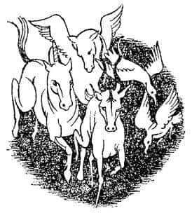
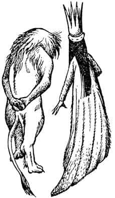

Zamanın Başlangıcından Bir Büyü
Şimdi Edmund’a geri dönelim. Herhangi birinin yürüyebileceğini düşündüğü süreden çok daha fazla yürümeye zorlandığı için dizlerinin bağı çözüldü ve hareketsiz sırtüstü uzandı. Cadı nihayet kayın ve porsuk ağaçlarıyla kaplı karanlık bir vadide durmuştu. Orada yatmasına izin verdikleri sürece bundan sonra ne olacağı umrunda bile değildi. Ne kadar aç ve susuz olduğunu fark etmeyecek kadar yorgundu. Cadı ve cüce çok yakınında fısıltıyla konuşuyorlardı.
“Hayır” dedi cüce, “işe yaramaz şimdi, ey Kraliçe. Şu anda Taş Masa’ya ulaşmış olmaları gerek.”
“Belki Kurt koklayarak bizi bulur ve haber getirir” dedi Cadı.
“Öyle olsa bile getirdiği haber iyi haber olamaz” dedi cüce.
“Cair Paravel’de dört taht var” dedi Cadı. “Sadece üçü işgal edilirse ne olur? Böylece kehanet yerine gelmemiş olur.”
“O burada olduğuna göre bunun ne önemi olabilir ki?” dedi cüce. Şu anda bile Aslan’ın ismini efendisine söylemeye cesaret edemiyordu.
“Uzun süre kalmayabilir. Ve sonra – Cair’deki üçüne saldırırız.”
“Ve bunu (Edmund’a bir tekme atarak) pazarlık amacıyla elimizde tutmamız iyi olabilir” dedi cüce.
“Evet! Kurtarsınlar bakalım onu” dedi Cadı küçümseyen bir edayla.
“Öyleyse” dedi cüce, “kararımızı uygulasak iyi olur.”
“Ben bunu Taş Masa’da yapalım derim” dedi Cadı. “Uygun yer orasıdır. Daha önceleri de hep orada yapılmıştır.”
“Taş Masa’yı yeniden gerçek amacına yönelik olarak kullanmak için uzun bir süre geçmesi gerekiyor” dedi cüce.
“Doğru” dedi Cadı ve ekledi, “Ben başlıyorum.”
O anda hırlayan bir kurt koşarak onlara yaklaştı.
“Gördüm onları. Hepsi onunla beraber Taş Masa’da. Liderimiz Maugrim’i öldürdüler. Ben çalılıklarda gizlenmiştim ve her şeyi gördüm. Âdemoğullarından biri onu öldürdü. Kaçın! Kaçın!”
“Hayır” dedi Cadı. “Kaçmamız gerekmiyor. Çabucak git. Tüm adamlarımızı, mümkün olduğunca süratle benimle burada buluşmak üzere topla. Devleri, kurt adamları ve bizim tarafımızda olan ağaçların ruhlarını çağır. Gulyabanileri, cinleri, insan yiyen devleri ve minotaurları* çağır. Zalimleri, büyücü karıları, hortlakları ve zehirli mantar insanlarını çağır.
Savaşacağız. Ne yani? Asa hâlâ bende değil mi? Gelirlerken safları taşa dönüşmeyecek mi? Çabucak git. Sen uzaktayken benim burada bitirmem gereken küçük bir iş var.”
İri canavar başını eğdi, döndü ve aceleyle uzaklaştı.
“Şimdi” dedi Cadı, “masamız yok – bir bakalım. Evet, ağacın gövdesine yaslasak iyi olur.”
Edmund’u kaba bir şekilde ayağa kalkmaya zorladılar. Sonra cüce onu sırtından ağaca yasladı ve çabucak bağladı. Edmund, Cadı’nın mantosunu çıkardığını gördü. Mantonun altındaki kolları çıplak ve kireç gibi bembeyazdı. Edmund, bembeyaz kollardan başka hiçbir şey göremiyordu; bu vadideki ağaçların altında her şey öyle karanlıktaydı ki.

“Kurbanı hazırla” dedi Cadı. Cüce, Edmund’un yakasını açıp boynundan geriye doğru katladı. Sonra Edmund’un saçını tutup başını geriye doğru çekti; böylece Edmund çenesini kaldırmak zorunda kalmıştı. Daha sonra Edmund tuhaf bir ses duydu – bızzzzz – bızzzzz – bızzzzz. Önce ne olduğunu kavrayamadı. Sonra anladı. Bıçağın bileylenmesinden çıkan seslerdi bunlar.
O anda her yönden yükselen sesler duydu – toynakların patırtısı ve kanat çırpışları – Cadı’nın çığlığı – her tarafta karmaşa. Sonra bağlarının çözülmekte olduğunu fark etti. Güçlü kollar onu sarmalıyordu. Derinlerden gelen nazik seslerin:
“Bırakın uzansın – biraz şarap verin – iç bunu – kıpırdama – bir dakikaya kalmaz iyileşirsin.” dediğini duydu.
Daha sonra birbirleriyle konuşanların sesleri geldi kulağına: “Cadı’yı kim tutuyor?” “Ben, sen tutuyorsun sanmıştım.” “Ben onu elinden bıçağı düşürdükten sonra görmedim – cüceyi kovalıyordum – onun kaçtığını mı söylüyorsun?” “– İnsan her şeyi aynı anda düşünemez – bu da ne? Oh, özür dilerim, sadece bir ağaç kökü!” Ve sonra tüm sesler kesildi. Edmund bayılmıştı.
Biraz sonra sentorlar, tek boynuzlu atlar, geyikler ve kuşlar (bunlar elbette Aslan’ın geçen bölümden tanıdığınız kurtarma timiydi) Edmund’u yanlarına alarak Taş Masa’ya gitmek üzere yola çıktılar, ama daha sonra vadide olanları görebilselerdi, sanırım şaşırırlardı. Ortalık çok sakindi. Bir süre sonra ay her yeri aydınlattı. Eğer orada olsaydınız ayışığının eski bir ağaç kökünü ve irice bir kayayı aydınlattığını siz de görürdünüz. Ve dikkatlice baktığınızda kök ile kayada bir tuhaflık olduğunu düşünmeye başlardınız. Sonra ağaç kökünün gerçekten tuhaf bir şekilde yere çömelmiş şişman bir adama benzediğini fark ederdiniz. Gözlerinizi ayırmadan bakmaya devam etseydiniz kökün kayaya doğru yürüdüğünü, kayanın kalkıp oturduğunu ve kökle konuşmaya başladığını görecektiniz. Çünkü kök ve kaya aslında cüce ve Cadı’dan başkası değildi. Nesneleri olduklarından başka bir şeymiş gibi göstermek Cadı’nın büyüsünün bir parçasıydı ve bıçağı elinden alındığında kılık değiştirmek akıllılığında bulunmuştu. Asasını da bırakmamış, emin bir yere saklamıştı.
Çocuklar ertesi sabah uyandıklarında (çadırda bir yığın yastık arasında uyumaktaydılar) Bayan Kunduz’dan ilk duydukları şey, erkek kardeşlerinin kurtarılarak gece geç vakitte kampa getirildiği ve şu anda Aslan’la birlikte olduğuydu. Kahvaltı eder etmez hepsi dışarı çıktılar ve Aslan’ın maiyetindekilerden ayrı olarak Edmund’la birlikte çiy yağmış çimlerin üzerinde yürüdüğünü gördüler. Aslan’ın neler söylediğini size anlatmama gerek yok (kimse de duymadı zaten), fakat bu Edmund’un asla unutmadığı bir konuşmaydı. Çocuklar yaklaşırken, Edmund’u işaret eden Aslan onlara doğru döndü:
“İşte kardeşiniz” dedi, “artık onunla geçmiş hakkında konuşmanıza gerek yok.”
Edmund her biriyle el sıkıştı ve herkese tek tek “Özür dilerim” dedi. Ve çocuklar ayrı ayrı “Önemli değil” dediler. Herkes, onunla yeniden dost olduğunu açıkça belirtecek bir şeyler – sıradan ve doğal şeyler – söylemeyi çok istiyordu. Ne var ki kimse söyleyecek bir söz bulamıyordu. İçinde bulundukları durumun tuhaflığını düşünmelerine fırsat kalmadan önce leoparlardan biri Aslan’a yaklaştı.
“Majesteleri, huzura kabul edilmeyi bekleyen bir düşman elçisi var” dedi.
“Yaklaşsın” dedi Aslan.
Leopar uzaklaştı ve az sonra Cadı’nın cücesiyle geri döndü.
“Mesajın ne, Toprağın oğlu” diye sordu Aslan.
“Narnia Kraliçesi ve Yalnız Adaların İmparatoriçesi gelip sizinle konuşmak için güvence istiyor” dedi cüce, “sizin ve onun yararına olan bir konuda.”
“Narnia Kraliçesi’ymiş!” dedi Bay Kunduz. “Ne cesaret—”
“Sakin ol Kunduz” dedi Aslan. “Yakında tüm sıfatlar gerçek sahiplerini bulacak. Şimdi bunu tartışmayalım. Söyle sahibine Toprağın oğlu, asasını şu büyük meşenin yanında bırakırsa güvence garantisi veriyorum.”
Anlaşma sağlandı. İki leopar, koşulların yerine getirilmesini sağlamak üzere cüceyle beraber gittiler. “Fakat ya leoparları taşa çevirirse?” diye fısıldadı Peter’e Lucy. Sanırım aynı soru leoparların da aklına gelmişti. Her neyse, giderlerken sırtlarındaki tüm tüyler dikilmiş ve kuyrukları, yabancı bir köpek gören kedininki gibi gerilmişti.
“Merak etme” diye fısıldadı Peter. “Öyle olsa Aslan onları göndermezdi.”
Birkaç dakika sonra Cadı tepeye geldi. Doğruca ilerleyerek Aslan’ın önünde dikildi. Cadı’yı daha önce görmemiş olan üç çocuk yüzüne bakınca tüylerinin ürperdiğini hissettiler. Orada bulunan tüm hayvanlardan alçak bir hırıldanma sesi çıktı. Parlak bir gün ışığı olmasına karşın herkes aniden üşür gibi oldu. Orada bulunanlar içinde tam anlamıyla rahat olan iki kişi, Aslan ve Cadı’ydı. O iki yüzü – birisi altın rengi diğeri bembeyaz – birbirine öylesine yakın görmek çok tuhaf bir şeydi. Cadı, Aslan’ın gözlerine hiç bakmadı; Bayan Kunduz bunu özellikle fark etmişti.
“Aranızda bir hain var Aslan” dedi Cadı. Kuşkusuz orada bulunan herkes bunun Edmund olduğunu biliyordu. Fakat başından geçenlerden ve bu sabahki konuşmadan sonra Edmund sadece kendini düşünen o eski çocuk değildi. Cadı, öylece Aslan’a bakmaya devam etti. Söyledikleri işe yaramamış gibi görünüyordu.
“Eh” dedi Aslan. “Sana karşı bir kabahat işlemedi.”
“Güçlü Büyü’yü unuttun mu?” diye sordu Cadı.
“Diyelim ki unuttum” diye cevapladı Aslan vakarla. “Anlat bize bu Güçlü Büyü’yü.”
“Sana anlatmak mı?” dedi Cadı, aniden sesi tizleşerek. “Şu yanı başımızda duran Taş Masa’da yazılı olanları sana anlatmak mı? Gizli Tepe’deki ateş taşlarının üzerindeki okların uzunluğu kadar derin olan harflerle yazılanları sana anlatmak mı? Denizler ötesindeki İmparator’un asasında kazılı olan şeyleri mi sana anlatacağım? Sen, en azından başlangıçta, İmparator’un Narnia’ya yaptığı büyüyü bilirsin. Her hainin yasal av olarak bana ait olduğunu ve her ihanet için can almaya hakkım olduğunu bilirsin.”
“Oh” dedi Bay Kunduz, “böylelikle kendini kraliçe olarak düşünmeye başladın – çünkü sen İmparator’un cellatıydın. Anlıyorum.”
“Sakin ol Kunduz” dedi Aslan çok hafif bir hırıltıyla.
“İşte bu nedenle” diye devam etti Cadı, “bu insani yaratık bana aittir. Cezalandırmak hakkımdır. Kanı benimdir.”
“Gel de al o zaman” dedi insan kafalı boğa, yüksek ve kükreyen bir sesle.
“Aptal” dedi Cadı, neredeyse hırıltıya benzeyen vahşi bir gülümsemeyle, “efendinin kaba güçle benim hakkımı benden çalabileceğini gerçekten düşünüyor musun? O, Güçlü Büyü’yü benden daha iyi bilir. Yasaların emrettiği gibi eğer ben kan almazsam bütün Narnia’nın yerle bir olup ateş ve suda yok olacağını bilir.”
“Bu çok doğru” dedi Aslan, “İnkâr etmiyorum.”

“Oh, Aslan!” diye fısıldadı Susan, Aslan’ın kulağına, “Biz – yani sen yapmazsın, değil mi? Güçlü Büyü’ye karşı bir şey yapamaz mıyız? Ona karşı gelecek bir şey yok mu?”
“İmparator’un büyüsüne karşı gelmek mi?” dedi Aslan, kaşları çatılmış durumda ona dönerek. Ve sonra kimse bu teklifi tekrarlayamadı.
Edmund, Aslan’ın öbür yanındaydı ve sürekli onun yüzüne bakıyordu. Bir an boğulur gibi bir hisse kapıldı. Bir şey söyleyip söylememekte tereddüt etti, ancak sonra kendisinden beklenenin, itaat etmek ve sabretmek olduğunu anladı.
“Hepiniz geriye çekilin” dedi Aslan, “Cadı’yla tek başıma konuşacağım.”
Hepsi itaat etti. Aslan’la Cadı ciddi ifadeyle ve alçak sesle konuşurlarkenki bekleyiş ve merak çok kötüydü. Lucy, “Oh, Edmund” dedi ve ağlamaya başladı. Peter, sırtını dönmüş uzaklardaki denizi seyrediyordu. Kunduzlar başları öne eğik, birbirlerinin pençelerini tutmuş, bekliyorlardı. Sentorlar huzursuz ayaklarını yere vuruyorlardı. Ancak bir süre sonra herkes tamamıyla sakinleşti. Öyle ki uçuşan arıların vızıltısı dahil, aşağılardaki ormanda kuş sesleri ve rüzgârda kıpırdayan yaprakların hışırtısı bile duyuluyordu. Aslan ile Cadı’nın konuşmaları hâlâ sürüyordu.
Nihayet Aslan’ın sesini duydular. “Hepiniz gelebilirsiniz” dedi Aslan, “sorunu çözdüm. Cadı, kardeşinizin kanındaki hakkından vazgeçti.” O an tepenin her yanında, sanki herkes nefesini tutmuş da şimdi yeniden nefes almaya başlamış gibi, bir uğultu ve sonra da konuşmaların mırıltısı duyuldu.
Cadı, yüzünde vahşi bir gülümsemeyle dönüp uzaklaşmak üzereydi ki durdu ve:
“Peki, sözünü tutacağını nereden bileyim?” dedi.
“Haa-a-aarh!” diye kükredi Aslan, tahtından yarıya kadar doğrularak. Kocaman ağzı açıldıkça açıldı, kükremesi güçlendikçe güçlendi. Cadı ağzı açık olarak bir süre baktı, sonra eteklerini topladı ve haklı olarak, yaşamını kurtarmak için koşarak uzaklaştı.
* Yarı insan, yarı boğa, insan etiyle beslenen mitolojik canavar.